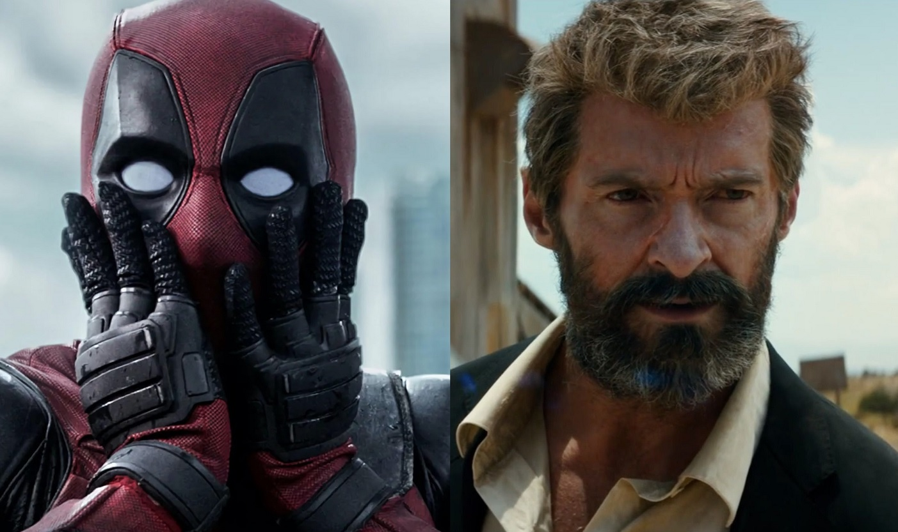

Deadpool 3: Hugh Jackman diz que novo filme não altera linha do tempo de Logan

Hugh Jackman, que retorna ao papel de Wolverine em Deadpool 3, está aliviado que a volta do seu personagem não estrague a história construída em Logan, de 2017. Ao canal Sirius XM, o ator explicou que o terceiro filme usará alguma explicação de multiverso ou mudança de linha do tempo que não mexa com o que aconteceu no filme de James Mangold, em que o mutante morre.
“Por causa desse dispositivo que têm no mundo Marvel de mover as linhas do tempo, agora podemos voltar porque é 'ciência'”; disse Jackman com uma risada. “E então eu não tenho que estragar a linha do tempo de Logan , o que era importante para mim, e acho que provavelmente para os fãs também.”
O filme Deadpool 3 ganhou um vídeo promocional com Ryan Reynolds e Hugh Jackman além de ter confirmado a data para 6 de setembro de 2024. No vídeo, Reynolds fala sobre a preparação para viver o personagem da Marvel e no final do vídeo Jackman surge atrás do cenário. Reynolds então pergunta: "Hey, Hugh, você quer interpretar o Wolverine mais uma vez?". E ele responde: "Sim, claro, Ryan".
O primeiro Deadpool foi dirigido por Tim Miller. A sequência, lançada em 2018, teve como diretor David Leitch.
LEIA MAIS
1 - Samurai X: divulgado novo trailer do remake
2 – Segunda temporada de Vinland Saga ganha novo trailer;
Deadpool 2 superou o original e foi, temporariamente, a maior bilheteria mundial de um filme para maiores. O recorde foi quebrado em 2019 por Coringa, dirigido por Todd Phillips.